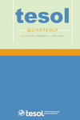

Service
Professional Roles

2025–
Senior Associate Editor, TESOL Quarterly
SSCI Q1 in Linguistics & Education
2024–
Honorary Research Fellow, Department of Education, University of Oxford

2024–
Editorial Board Member, System
SSCI Q1 in Linguistics & Education

2024–
Member, Hong Kong Examinations and Assessment Authority Committee
Selected External Service to Academic and Professional Bodies
Invited speaker at presentations/lectures/workshops
External PhD thesis examiner
External reviewer for RGC competitive grants
External reviewer for university program
Examiner for external academic competition
Advisor/Speaker for Knowledge Transfer projects
Selected Service to University and College
Member, AI Ethics and Digital Literacy Committee, Chung Chi College
Member, Faculty Board of Education
Interview Panelist, Scholarships for Balanced Education, Chung Chi College
Member, Scholarships Committee, Chung Chi College
Deputy Program Coordinator, BA (English Studies) and BEd (English Language Education/ELED Program
Admission Coordinator & Interview Panelist, ELED Program
Member, ELED Program Committee & Advisory Committee
Admission Interview Panelist, MA TESOL Program
Admission Interview Panelist, PGDE Program
Coordinator, Research Cluster Committee
PhD or EdD Internal Examiner/Annual Seminar Chair